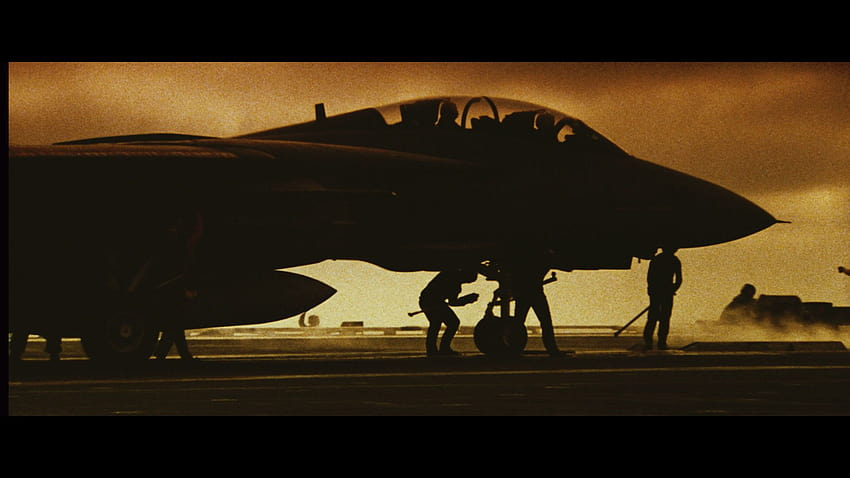

Top Gun: Maverick’s immersive, shot-from-the-cockpit dogfights and low-altitude, close-formation flying scenes are made possible by rare and unfettered military access. Witnessing the spectacle recalls a letter Francis Ford Coppola once wrote to the Pentagon: “I can only assume that the military uses its control of these aircraft as a means of dictating which films can be made and which films cannot be made.” The US air force had refused Coppola support and access to the helicopters that were integral to *Apocalypse Now–*eventually, he struck a deal with Philippine dictator Ferdinand Marcos for access to Huey helicopters, fighter jets, and military trucks.
Seven years later, the original Top Gun (1986) helped boost Navy recruitment by around 8% (not quite the 500% statistic that’s been floating around social media). In Alissa Wilkinson’s Vox Article, “The long, long twisty affair between the US Military and Hollywood,” film historian Mark Harris says the dynamic changed after Vietnam “from the military saying to Hollywood, ‘We need you to help us,’ to the military saying to Hollywood, ‘We’ll help you. We’ll give you access.’” The military also happily backed the sequel to Top Gun: Lockheed Martin’s Skunk Works partnered with Paramount Pictures to produce a physical mock-up/likely adaptation of their unfinished Hypersonic SR-72 stealth plane for the “Mach 10” sequence, complete with a Lockheed logo on the pilot stick. The Maverick cast talks in real “ready rooms” and takes off from the USS Theodore Roosevelt aircraft carrier in Boeing F/A-18 Super Hornet fighter jets, outfitted with 6K Sony Venice cinema cameras.
The Pentagon had some input into Maverick’s script, too. After initial clearances, Captain JJ “Yank” Cummings and Commander Tim “Sparky” Charlebois worked with the film’s screenwriter Eric Singer and director Joseph Kosinski for several months to ensure the film depicted the Navy “accurately, positively, and professionally.”Cummings hopes Top Gun: Maverick does for the current generation what the original did for his—push civilians to enlist. He talked to GQ about his time advising Singer and Kosinski on what to add, change, and remove from their depiction of the Navy and elaborate showcase of US military superiority.
Captain Cummings: I got a call in June of 2017 from the commander of the Naval Airforce Pacific Public Affairs Office asking if I would escort the director and producer to the USS Theodore Roosevelt to spend a night on the aircraft carrier. I was not “hired” for my moviemaking experience, I was “hired” for my F-14, F-18, and aircraft carrier background.
The night before we went to the ship, I showed Joe [Kosinski] a bunch of motivational flying videos that were exclusively Tomcat footage. He loved them and told me at the San Diego Premiere in May, “Yank. Top Gun: Maverick started the night I sat down on your living room couch.” I took Joe out to the carrier, and we sorted out some plot themes based on the discussions we had and what he was seeing on the ship. Eric Singer, who wrote American Hustle, was the writer but could not make the trip out to the ship. CDR Tim “Sparky” Charlebois came on board right after the carrier visit, and we both decided a trip to Naval Air Station (NAS) Fallon, Nevada which is where TOPGUN [The real-life United States Navy Strike Fighter Tactics Instructor program] is located, would be valuable. We thought Eric and Joe needed to meet a bunch of naval aviators, observe an air wing going through training, hit the NAS Fallon Officers’ Club—which is legendary by the way—and meet the TOPGUN staff in their building. 